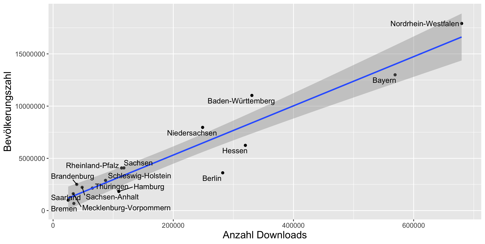
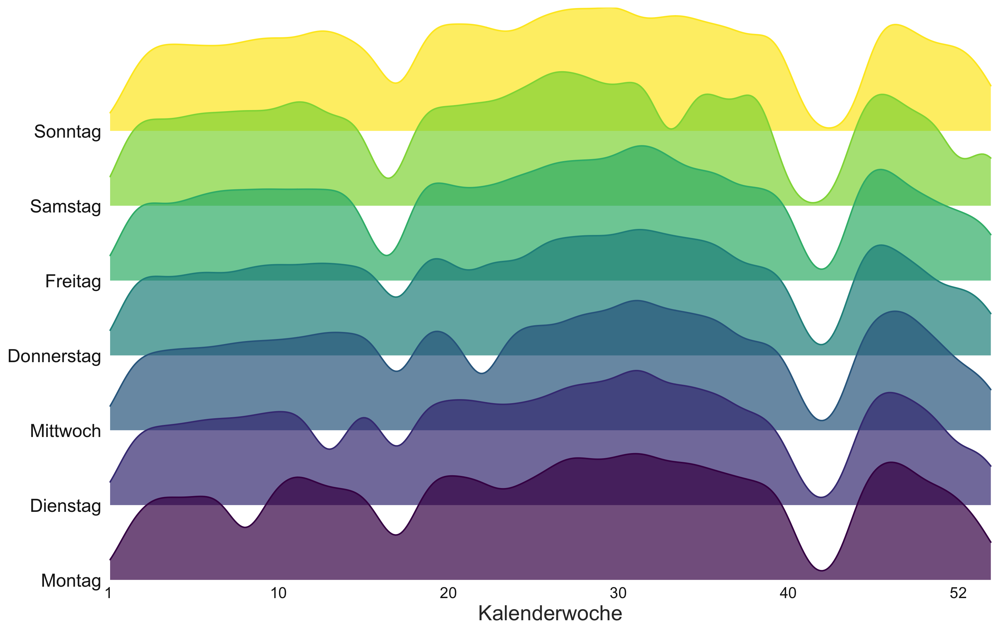
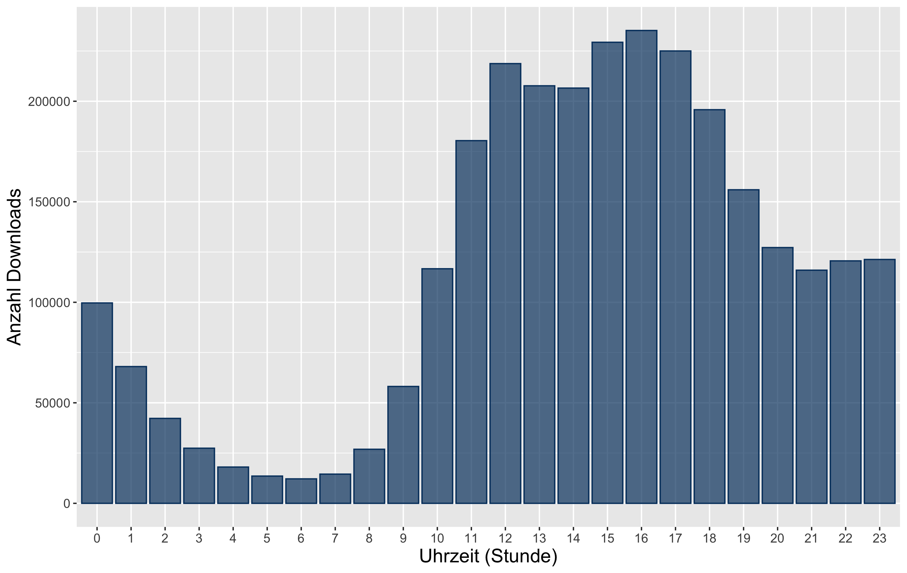

Einleitung und Fragestellung
Anfang der 2000er Jahre entstanden in Reaktion auf unzureichende Zugangswege zu Fachliteratur und ausgelöst durch steigende Subskriptionsgebühren wissenschaftlicher Zeitschriften erste illegale Dokumentensammlungen, sogenannte Schattenbibliotheken (Karaganis, 2018). Schattenbibliotheken sind Internetdienste, die ohne Zustimmung der RechteinhaberInnen Datenbanken mit wissenschaftlichen Volltexten erstellen, betreiben und allen Interessierten dadurch den Zugriff auf wissenschaftliche Literatur ermöglichen (Bodó, 2016). Zu den meistgenutzten Schattenbibliotheken zählt Sci-Hub. Der Dienst wurde 2011 von Alexandra Elbakyan entwickelt und umfasste zum Zeitpunkt der Untersuchung mehr als 74 Millionen Dokumente.
Die Akzeptanz dieser Dienste unter Forschenden und anderen Personengruppen, verschwimmende Grenzen in der öffentlichen Wahrnehmung zu Open Access sowie mögliche Konsequenzen für bestehende legale Zugänge zu Fachliteratur beschäftigen nicht nur InformationswissenschaftlerInnen weltweit.
In diesem Beitrag wird die Rolle des Phänomens Schattenbibliothek bei der wissenschaftlichen Informationsversorgung in Deutschland untersucht, insbesondere im Hinblick auf regionale Verteilungen von Downloads, Zugriffszeiten, Zusammenhängen zwischen der Größe bestimmter Personengruppen (Bevölkerungszahl, Anzahl wissenschaftlicher Mitarbeitender an Hochschulen) und den Downloadzahlen eines Bundeslands sowie den Eigenschaften der angefragten Dokumente (Themen, Verlage, Publikationsalter beim Zugriff).
Forschungsstand
Dank ihrer zunehmenden Popularität rücken Schattenbibliotheken in den letzten Jahren zunehmend in den Fokus der Forschung. Im Mittelpunkt steht dabei insbesondere die derzeit größte Schattenbibliothek Sci-Hub.
Sci-Hub zeichnet sich durch eine einfache grafische Benutzungsoberfläche aus. Der Zugriff erfolgt über die Eingabe eines Digital Object Identifier (DOI) in die Suchmaske. Gefundene Dokumente werden Nutzenden im Browser angezeigt und zum Download angeboten. Ist das angefragte Dokument noch nicht in der Datenbank abgelegt, nutzt Sci-Hub Bibliothekszugänge für lizenzierte Volltexte, um das Dokument von Verlagswebseiten herunterzuladen und an die Nutzenden auszuliefern (Seer, 2017). Nach Angaben von Sci-Hub werden diese Bibliothekszugänge von Forschenden gespendet. Zumindest eine Quelle erwähnt die Beteiligung von Bibliotheksmitarbeitenden und technischem Personal an wissenschaftlichen Einrichtungen (Seer, 2017). Es ist nicht ausgeschlossen, dass Zugänge auch ohne Kenntnis der ZugangsinhaberInnen erworben wurden (Seer, 2017).
Vorangegangene Analysen der Nutzung von Sci-Hub zeigen, dass der Dienst weltweit genutzt wird (Bohannon, 2016). Ein Abgleich der Datenbank von Sci-Hub im Jahr 2016 mit der bibliografischen Datenquelle Crossref belegt, dass die Schattenbibliothek einen Großteil der wissenschaftlichen Fachliteratur abdeckt (Himmelstein et al., 2018). So waren beispielsweise 85,1 % der Zeitschriftenartikel, die nicht über Open Access frei zugänglich waren, über Sci-Hub verfügbar. Auch die Inhalte vieler Zeitschriften waren fast vollständig in der Datenbank enthalten.1 Mindestens 76,3 % der Zeitschriftenliteratur einer Disziplin über Sci-Hub verfügbar. Für die meisten Publikationsjahre seit 1850 lag die Abdeckung zwischen 60 und 80 %. In den Jahren 2016 und 2017 zeigte sich eine geringe Abdeckung. Ursächlich könnte dafür sein, dass Dokumente erst nach einer erfolgreichen Anfrage in die Datenbank aufgenommen werden (Himmelstein et al., 2018). Eine weitere Untersuchung zeigte, dass über Sci-Hub überwiegend auf aktuelle Literatur zugegriffen wird: Das Publikationsalter beim Zugriff betrug bei 35 % der angefragten Dokumente weniger als zwei Jahre (Greshake Tzovaras, 2017). Zudem konzentrierten sich rund 80 % der Zugriffe auf nur neun Verlage.
Die genannten Untersuchungen berichten von der verbreiteten Nutzung der Schattenbibliothek und ihrer umfassenden Abdeckung der Zeitschriftenliteratur. Die Nutzung von Sci-Hub unter Forschenden scheint zuzunehmen, obwohl nicht nur der Betrieb, sondern auch die Nutzung einer Schattenbibliothek – zumindest nach deutschem Recht – rechtlich nicht unbedenklich ist (Steinhauer, 2016). In einer Umfrage, die 2016 von der Zeitschrift Science unter LeserInnen durchgeführt wurde, gaben 60 % der Befragten an, Sci-Hub bereits genutzt zu haben (Travis, 2016). Ein Viertel der Befragten besuchte die Schattenbibliothek wöchentlich oder täglich. Auch unter Nachwuchsforschenden nimmt die Nutzung von Sci-Hub zu (Nicholas et al., 2018).
Diese allgemeinen Analysen erlauben jedoch kaum Rückschlüsse auf regionale Besonderheiten der Nutzung. Erste Länderanalysen zur Nutzung von Sci-Hub in Russland und der Ukraine zeigen, dass sich in beiden Ländern die Nutzung in Großstädten konzentriert. (Lutay, 2018; Nazarovets, 2018)
Auch im Hinblick auf die am häufigsten betroffenen Verlage ergeben sich in diesen Ländern Häufungen. Dieses Muster hängt vermutlich mit der allgemeinen Verlagskonzentration auf dem Zeitschriftenmarkt zusammen (Larivière, Haustein & Mongeon, 2015).
Disziplinspezifische Besonderheiten der Nutzung von Sci-Hub wurden bislang kaum untersucht. Eine Ausnahme bildet die medizinische Fachliteratur. Ermittelt wurde, dass sich 69 % der Anfragen nach Fachliteratur aus diesem Themengebiet auf Länder mit geringem und mittleren Einkommen zurückführen lassen. Länder mit mittlerem Einkommen, die nicht vom HINARI-Programm2 profitieren weisen das höchste Verhältnis von Downloads zu EinwohnerInnen auf (Till et al., 2019). Die Autorinnen und Autoren dieser Studie kommen zu dem Schluss, dass Sci-Hub zur Überbrückung von Ungleichheit beim legalen Zugang zu medizinischer Fachliteratur genutzt wird.
Vorgehen (Methode, Datenerhebung und -bearbeitung)
Für die vorliegende Studie wurde die Nutzung von Sci-Hub in Deutschland mit Methoden der Logfile-Analyse untersucht. Dabei werden die in den Logfiles repräsentierten Transaktionen zwischen Nutzenden und Informationssystemen ausgewertet (Jansen, 2009). In den Informationswissenschaften werden Logfile-Analysen beispielsweise für die Analyse von Internetdiensten und elektronischen Ressourcen angewendet (Schlögl, 2013).
Die Studie folgt einem explorativen Ansatz. Mögliche Anknüpfungspunkte für vertiefende Fragestellungen werden in der Diskussion erläutert.
Datenerhebung
Die Betreiberin von Sci-Hub veröffentlichte anonymisierte Logfiles für die Zeiträume September 2015 bis Februar 2016 sowie Januar 2017 bis Dezember 20173 (Bohannon & Elbakyan, 2016; Greshake Tzovaras Tzovaras, 2018). Die Logfiles dokumentieren erfolgreiche Anfragen an den Dienst. Am 17. Mai 2018 gab die Betreiberin von Sci-Hub über Twitter bekannt, dass Anfragen mit einem bestimmten DOI-Präfix fälschlicherweise aus den Logfiles von 2017 herausgefiltert worden waren.4 Der Link zum ergänzenden Datensatz lässt sich inzwischen nicht mehr auflösen. Da die nachgereichten Anfragen zu einem früheren Zeitpunkt heruntergeladen und gesichert werden konnten, werden sie in dieser Untersuchung dennoch verwendet. Der ausgewertete Datensatz stellt ein Subset mit Anfragen aus Deutschland dar und ist frei verfügbar (Strecker, 2018).
Das Subset5 wurde über Crossref um bibliografische Angaben zu den angefragten Dokumenten ergänzt. Publikationsdatum und ISSN wurden auf Artikelebene über die DOI des jeweiligen Dokuments ermittelt. Über die ISSN wurden der Verlag sowie die Notationen der ASJC (All Science Journal Classification) auf Zeitschriftenebene abgefragt. Angaben zur Größe der untersuchten Personengruppen (Bevölkerung6 und wissenschaftliche Mitarbeitende an Hochschulen7) auf Ebene des Bundeslandes stammen vom Statistischen Bundesamt.
Datenbearbeitung
Für ein allgemeines Bild der Themen angefragter Dokumente wurden die numerischen Notationen auf die ersten zwei Stellen verkürzt und damit auf die oberen Hierarchieebenen der ASJC bezogen.
Das Publikationsalter zum Zeitpunkt des Zugriffs stellt den Zeitraum zwischen dem Publikationsdatum, in Crossref angegeben in dem Feld issued, und dem Zeitpunkt der Abfrage in Monaten beziehungsweise Jahren dar.
Die Zuordnung von Orten zu Bundesländern erfolgte über OpenStreetmap.
Für die Datenerhebung und -auswertung wurde die Statistiksoftware R, die integrierte Entwicklungsumgebung RStudio und einige R-Libraries verwendet.
Ergebnisse
Die Logfiles dokumentieren insgesamt 3.047.945 Downloads. Der Großteil davon (2.837.666) entfällt auf das Jahr 2017.
Regionale Verteilung der Downloads

Die Abbildung zeigt die Anzahl der Downloads über den gesamten Zeitraum, gruppiert nach Ort. Die Karte verdeutlicht, dass Sci-Hub in Deutschland fast flächendeckend genutzt wird, wobei sich Downloadzahlen in Großstädten häufen. Auffällig ist der Unterschied in der Nutzungsintensität und regionalen Abdeckung zwischen Regionen im Nordosten und im Südwesten des Landes. Bezogen auf die Bundesländer weisen Berlin (0,078), Hamburg (0,06), Hessen (0,051), Bremen (0,05) und Bayern (0,044) die meisten Downloads pro Einwohner auf. Download- und Bevölkerungszahlen für alle Bundesländer sind in der nachfolgenden Tabelle dargestellt.
| Bundesland | Bevölkerungszahl | Downloads Gesamt | Downloads pro Einwohner |
|---|---|---|---|
| Baden-Württemberg | 11.023.425 | 330.782 | 0,03 |
| Bayern | 12.997.204 | 569.073 | 0,044 |
| Berlin | 3.613.495 | 282.230 | 0,078 |
| Brandenburg | 2.504.040 | 39.383 | 0,016 |
| Bremen | 681.032 | 34.569 | 0,05 |
| Hamburg | 1.830.584 | 109.377 | 0,06 |
| Hessen | 6.243.262 | 319.945 | 0,051 |
| Mecklenburg-Vorpommern | 1.611.119 | 33.598 | 0,02 |
| Niedersachsen | 7.962.775 | 248.816 | 0,031 |
| Nordrhein-Westfalen | 17.912.134 | 679.810 | 0,038 |
| Rheinland-Pfalz | 4.073.679 | 114.016 | 0,028 |
| Saarland | 994.187 | 25.147 | 0,025 |
| Sachsen | 4.081.308 | 117.775 | 0,029 |
| Sachsen-Anhalt | 2.223.081 | 48.351 | 0,022 |
| Schleswig-Holstein | 2.889.821 | 87.275 | 0,03 |
| Thüringen | 2.151.205 | 65.355 | 0,03 |
Korrelation von Downloadzahlen eines Bundeslandes mit der Größe von Personengruppen
Wie in der folgenden Abbildung dargestellt, besteht ein starker Zusammenhang zwischen der Bevölkerungszahl und der Anzahl von Downloads eines Bundeslands (Pearson’s r: 0,95 ; p < 0,001). Ein lineares Regressionsmodell (kleinste Quadrate) beschreibt den Zusammenhang sehr gut (adjusted R2 = 0, 901).
Ein ähnlich starker Zusammenhang ergibt sich für Downloadzahlen und die Anzahl wissenschaftlicher Mitarbeitender an Hochschulen (Pearson’s r: 0,92 ; p < 0,001). Das Regressionsmodell für wissenschaftliche Mitarbeitende liefert allerdings einen schwächeren Erklärungsansatz für die Entwicklung von Downloadzahlen (adjusted R2 = 0, 834).

Zeitliche Verteilung der Downloads
Die Anfragen des Jahres 2017 wurden in Hinblick auf die Zugriffszeiten (Wochentage und Uhrzeit) analysiert. Für alle Anfragen konnten Zugriffszeiten ermittelt werden.
Obwohl für das erstellte Subset Daten für die Kalenderwochen 41 bis 43 fehlen, zeigt die nächste Abbildung in der Tendenz einen Anstieg der Anzahl angefragter Dokumente im Verlauf des Jahres 2017. Eine deutliche Varianz zwischen den Wochentagen ist nicht erkennbar.

In der nächsten Abbildung ist die Uhrzeit der Anfragen nach Stunde dargestellt. Die Schattenbibliothek wird demzufolge überwiegend zu üblichen Bürozeiten und am späten Abend genutzt.

Dokumenteigenschaften
Notationen und Themen
Notationen der AJSC konnten für 3.047.649 der angefragten Dokumente ermittelt werden. Die Notationen „Statistics and Probability” (817.196) und „Statistics, Probability and Uncertainty” (803.874) treten dabei mit großem Abstand am häufigsten auf.
Eine Analyse der AJSC-Notationen auf der obersten Hierarchieebene ermöglicht eine allgemeinere Übersicht der Themen angefragter Dokumente. Demnach werden Publikationen, die den Themenfeldern Mathematik (952.196), Decision Sciences (829.806 - dazu zählen beispielsweise Statistik und Teile der Managementtheorie), Medizin (713.452) und Sozialwissenschaften (590.743) zugeordnet werden können, am häufigsten angefragt (siehe nachstehende Abbildung). Publikationen anderer Themenfelder wurden in deutlich geringeren Umfang angefragt.

Verlage
Angaben zum Verlag konnten für 3.047.045 Downloads ermittelt werden. Über den gesamten Zeitraum wurden Publikationen der Verlage Elsevier (850.342), Springer (485.883), Wiley (376.327), Informa (181.696) und American Chemical Society (124.379) am häufigsten angefragt. Durchschnittlich entfallen auf einen Verlag rund 2.947 Downloads. Der Median beträgt 16 Downloads, der Modalwert liegt bei einem Download pro Verlag.
Publikationsalter
Für 2.076.856 angefragte Dokumente konnte das Publikationsdatum im Format YYYY-MM ermittelt und damit das Alter der Publikationen zum Zeitpunkt des Zugriffs berechnet werden. Das durchschnittliche Alter der Publikationen beim Zugriff beträgt 9,98 Jahre, der Median liegt bei 5,41 Jahren, der Modalwert bei 9 Monaten. 24,54 % der angefragten Dokumente waren zum Zeitpunkt der Abfrage weniger als zwei Jahre alt. Einige Publikationen waren zum Zeitpunkt der Abfrage auffallend alt – im Extremfall über 500 Jahre. Dadurch wird das durchschnittliche Publikationsalter stark verschoben. Dokumente mit einem Publikationsalter von mehr als 100 Jahren entstammen überwiegend den Themenfeldern Medizin (3.275), Sozialwissenschaften (1.526), Psychologie (1.435) und Energie (1.400).
Diskussion
Dass Sci-Hub in Deutschland bis auf einige Regionen im Nordosten fast flächendeckend genutzt wird, wird durch die Visualisierung der Downloads auf der Karte verdeutlicht. In Großstädten und dicht besiedelten Gebieten häufen sich die Downloadzahlen. Der starke Zusammenhang zwischen der Bevölkerungszahl, der Anzahl wissenschaftlicher Mitarbeitender und den Downloadzahlen eines Bundeslands liefert einen Erklärungsansatz für regionale Unterschiede in der Nutzungsintensität.
Die Analyse dieser Personengruppen liefert weitere Erkenntnisse über die Nutzung von Sci-Hub in Deutschland. Die Größe beider Personengruppen korreliert stark mit den Downloadzahlen eines Bundeslands. Die linearen Regressionsmodelle beschreiben die Entwicklung von Downloadzahlen bei einem Zuwachs der Personengruppe jedoch unterschiedlich gut. Daran wird deutlich, dass die Nutzung von Sci-Hub nicht allein durch Hochschulangehörige erklärt werden kann. Aufgrund der mangelnden Datengrundlage wurden Angehörige außeruniversitärer Forschungseinrichtungen in dieser Arbeit nicht betrachtet.
Die Auswertung der Zugriffszeiten zeigt, dass die Downloadzahlen im Verlauf des Jahres 2017 in der Tendenz anstiegen. Da sich Downloadzahlen zu üblichen Bürozeiten häufen, ist anzunehmen, dass Sci-Hub vor allem am Arbeitsplatz genutzt wird. Allerdings erfolgt die Nutzung unabhängig vom Wochentag.
Eine Analyse der Themenfelder, die den angefragten Dokumenten zugeordnet werden konnten, zeigt, dass ein Großteil der Downloads auf Publikationen aus vier Themengebieten entfiel: Mathematik, Decision Sciences, Medizin und Sozialwissenschaften. Das könnte als Anzeichen für Informationsbedürfnisse in diesen Themenfeldern gewertet werden, die von bestehenden legalen Diensten nicht vollständig abgedeckt werden.
Hier könnten weitere Untersuchungen anknüpfen, die die Nutzung eines Themengebiets vertieft betrachten. Beispielsweise könnte über die Nutzung medizinischer Fachliteratur die These überprüft werden, dass Ärztinnen und Ärzte ohne Anbindung an ein Bibliothekssystem Schattenbibliotheken nutzen, um aktuelle wissenschaftliche Literatur zu beziehen. Einige Disziplinen, insbesondere Mathematik und Teile der Decision Sciences, weisen zudem zahlreiche Überschneidungen mit anderen Themengebieten auf, beispielsweise durch die Beschreibung und Evaluierung statistischer Methoden. Eine Assoziationsanalyse könnte aufzeigen, wie Publikationen welcher Disziplinen gemeinsam mit Publikationen aus der Mathematik genutzt werden.
Die in den Logfiles dokumentierten Anfragen konzentrieren sich auf wenige Verlage. Besonders häufig wurden Publikationen des Verlags Elsevier heruntergeladen, gefolgt von Springer und Wiley. Für die meisten Verlage wurde dagegen nur ein Download registriert. Bei der zunehmenden Konsolidierung des Zeitschriftenmarkts verwundert diese Beobachtung nicht. Nach Inkrafttreten des von Projekt DEAL ausgehandelten Publish-and-Read-Vertrags mit dem Verlag Wiley Anfang 2019 könnte zukünftig untersucht werden, ob dieser Open-Access-Transformationsvertrag einen Einfluss auf die Nutzung von Sci-Hub hat. Zu untersuchen wäre weiterhin, ob die Kündigung von Elsevier-Subskriptionen durch wissenschaftliche Bibliotheken im Rahmen der DEAL-Verhandlungen einen Anstieg der Nutzung von Elsevier-Publikationen über Sci-Hub zur Folge hat.
Einige Verlage verfolgen Strategien zur Bekämpfung von Schattenbibliotheken, darunter Klagen gegen die Betreiberin oder das Blocken des Dienstes durch Internet Service Provider. Allerdings haben legale und technische Maßnahmen, die sich gegen den Betrieb der Schattenbibliothek richten, bislang wenig bewirkt (Manley, 2019). Einige Verlage setzen nun auf eine Abkehr vom IP-basierten Zugriff auf lizenzierte Fachliteratur zugunsten eines plattformübergreifenden Authentifizierungssystems und begründen den Vorstoß auch mit der Bekämpfung von Piraterie (National Information Standards Organization, 2019). Ob diese Maßnahme ein wirksames Mittel gegen Schattenbibliotheken darstellt, bleibt abzuwarten; allerdings wird sie sich auch auch auf legale Informationsangebote von Bibliotheken auswirken. Entwicklungen dieser Initiative sollten daher auch von Bibliotheken beobachtet werden.
Nutzende erlangen über Sci-Hub überwiegend Zugang zu aktueller Literatur, was der Modalwert des Publikationsalters von 9 Monaten zeigt. Greshake Tzovaras stellte für alle Anfragen zwischen September 2015 und Februar 2016 fest, dass bei rund 35 % der angefragten Dokumenten das Publikationsalter weniger als zwei Jahre betrug (Greshake Tzovaras, 2017). Für Anfragen aus Deutschland über den gesamten betrachteten Zeitraum weisen nur 24,54 % der Dokumente ein Publikationsalter von unter zwei Jahren auf. Obwohl die Angaben nicht direkt vergleichbar sind, kann der Unterschied als Hinweis darauf gewertet werden, dass in Deutschland vergleichsweise häufiger ältere Literatur angefragt wird. Auffällig ist, dass auch Publikationen angefragt werden, die ein sehr hohes Publikationsalter aufweisen – teilweise mehr als 100 Jahre. Dadurch werden Mittelwert und Median stark verschoben. Von diesen besonders alten Publikationen fallen einige längst nicht mehr unter den Schutz des Urheberrechts und sollten inzwischen in die Gemeinfreiheit übergegangen sein. An diese Beobachtung könnten weitere Untersuchungen, beispielsweise nach mangelnder Erschließung oder Zugangsbarrieren dieser Publikationen, anknüpfen.
Der Umstand, dass auch ältere Publikationen genutzt werden, in Verbindung mit steigenden Downloadzahlen, stützt die Annahme einer Normalisierung der Nutzung von Schattenbibliotheken und die These, dass die Nutzung auch mit dem vereinfachten Zugriff auf Ressourcen durch Sci-Hub erklärt werden kann.
Limitationen
Da die Logfiles nur erfolgreiche Anfragen dokumentieren, können in dieser Arbeit nur die Eigenschaften der Dokumente untersucht werden, die tatsächlich heruntergeladen wurden. Entsprechend erlauben die Logfiles keine Rückschlüsse auf alle Informationsbedürfnisse der Nutzenden, sondern nur die, welche von Sci-Hub erfüllt werden konnten. Aufgrund der Funktionsweise des Dienstes können über Sci-Hub zudem nur Dokumente, vor allem Zeitschriftenartikel, mit DOI angefragt werden.
Wesentliche Teile dieser Arbeit, vor allem die Filterung von Anfragen aus Deutschland, basieren auf der Interpretation von IP-Adressen. Da diese beispielsweise über Virtual Private Networks (VPNs) leicht verändert werden können, wurden möglicherweise nicht alle relevanten Anfragen berücksichtigt.
Die Logfiles decken den Zeitraum zwischen 2015 und 2017 in unterschiedlichem Umfang ab. Wie in der nachfolgenden Tabelle dargestellt, variiert auch die Anzahl der dokumentierten Downloads.
| Jahr | Abgedeckter Zeitraum (Monate) | Downloads Gesamt |
|---|---|---|
| 2015 | 4 | 218.495 |
| 2016 | 2 | 66.112 |
| 2017 | 12 (ausgenommen KW 41 - 43) | 3.870.206 |
Die Anreicherung der Logfiles erfolgte über Crossref. Relevante Angaben waren nicht für alle Anfragen verfügbar. Um die Vergleichbarkeit der analysierten Themengebiete sicherzustellen, erfolgte die Zuordnung der Themen über die ASJC auf der Ebene von Zeitschriften. Da Themen nicht für individuelle Zeitschriftenartikeln ermittelt wurden, ist die Granularität der Analyse sehr grob. Für detailliertere Ergebnisse, insbesondere für Publikationen aus disziplinübergreifenden Zeitschriften, könnten zukünftige Analysen eine Zuordnung auf der Ebene individueller Zeitschriftenartikel vornehmen.
Literatur
Bodó, B. (2016). Pirates in the Library – an inquiry into the Guerilla Open Access movement. SSRN Electronic Journal. Gehalten auf der 8th Annual Workshop of the International Society for the History and Theory of Intellectual Property, Glasgow. https://doi.org/10.2139/ssrn.2816925
Bohannon, J. (2016). Who’s downloading pirated papers? Everyone. Science, 352(6285), 508–512. https://doi.org/10.1126/science.352.6285.508
Greshake Tzovaras, B. (2017). Looking into Pandora’s box: The content of Sci-Hub and its usage. F1000Research, 6, 541. https://doi.org/10.12688/f1000research.11366.1
Himmelstein, D. S., Romero, A. R., Levernier, J. G., Munro, T. A., McLaughlin, S. R., Greshake Tzovaras, B., & Greene, C. S. (2018). Sci-Hub provides access to nearly all scholarly literature. ELife, 7. https://doi.org/10.7554/eLife.32822
Jansen, B. J. (2009). The methodology of search log analysis. In B. J. Jansen, A. Spink, & I. Taksa (Hrsg.), Handbook of research on web log analysis: (S. 99–121). https://doi.org/10.4018/978-1-59904-974-8
Karaganis, J. (2018). Introduction: Access from above, access from below. In J. Karaganis (Hrsg.), Shadow Libraries (S. 1–24). Cambridge, MA: MIT Press.
Larivière, V., Haustein, S., & Mongeon, P. (2015). The oligopoly of academic publishers in the digital era. PLOS ONE, 10(6), e0127502. https://doi.org/10.1371/journal.pone.0127502
Lutay, A. (2018, Juli 12). Use of Sci-Hub in the Russian Federation. https://doi.org/10.6084/m9.figshare.6809312.v1
Manley, S. (2019). On the limitations of recent lawsuits against Sci-Hub, OMICS, ResearchGate, and Georgia State University. Learned Publishing, 32(4), 375–381. https://doi.org/10.1002/leap.1254
National Information Standards Organization. (2019). Recommended practices for improved access to institutionally-provided information resources. Abgerufen von https://groups.niso.org/apps/group_public/download.php/21892/NISO_RP-27-2019_RA21_Identity_Discovery_and_Persistence.pdf
Nazarovets, S. (2018). Black Open Access in Ukraine: Analysis of downloading Sci-Hub publications by Ukrainian Internet Users. Abgerufen von https://arxiv.org/abs/1804.08479
Nicholas, D., Boukacem-Zeghmouri, C., Xu, J., Herman, E., Clark, D., Abrizah, A., Rodríguez-Bravo, B., & Świgoń, M. (2018). Sci-Hub: The new and ultimate disruptor? Learned Publishing. https://doi.org/10.1002/leap.1206
Schlögl, C. (2013). Logfile- und Link-Analysen – Nicht-reaktive Methoden der Online-Forschung. In Handbuch Methoden der Bibliotheks- und Informationswissenschaft. Bibliotheks-, Benutzerforschung, Informationsanalyse. https://doi.org/10.1515/9783110255546.184
Seer, V. (2017). Von der Schattenbibliothek zum Forschungskorpus. Ein Gespräch über Sci-Hub und die Folgen für die Wissenschaft. LIBREAS. Library Ideas, (32). Abgerufen von https://libreas.eu/ausgabe32/scihub/
Steinhauer, E. W. (2016). Die Nutzung einer „Schattenbibliothek” im Licht des Urheberrechts. LIBREAS. Library Ideas, (30). Abgerufen von https://libreas.eu/ausgabe30/steinhauer/
Till, B. M., Rudolfson, N., Saluja, S., Gnanaraj, J., Samad, L., Ljungman, D., & Shrime, M. (2019). Who is pirating medical literature? A bibliometric review of 28 million Sci-Hub downloads. The Lancet Global Health, 7(1), e30–e31. https://doi.org/10.1016/S2214-109X(18)30388-7
Travis, J. (2016). In survey, most give thumbs-up to pirated papers. https://doi.org/10.1126/science.aaf5704
Datenquellen
Bohannon, J., & Elbakyan, A. (2016). Data from: Who’s downloading pirated papers? Everyone. https://doi.org/10.5061/dryad.q447c
Greshake Tzovaras, B. (2018). Sci-Hub download log Of 2017. https://doi.org/10.5281/zenodo.1158300
Strecker, D. (2018). Sci-Hub Downloads from Germany [Data set]. https://doi.org/10.5281/zenodo.1286284
Verwendete Software
R Core Team. R: A language and environment for statistical computing. Wien: R Foundation for Statistical Computing. (2019) Version 3.6.1. https://www.r-project.org/
RStudio Team. RStudio: Integrated Development for R. Boston: RStudio, Inc. (2015) Version 1.2.1335.http://www.rstudio.com/
Wickham, Hadley. tidyverse. (2017) Version 1.2.1. https://cran.r-project.org/package=tidyverse
Grolemund, Garrett und Wickham, Hadley. lubridate. (2011) Version 1.7.4. https://cran.r-project.org/package=lubridate
Chamberlain, Scott u.a. rcrossref. (2019) Version 0.9.2. https://cran.r-project.org/package=rcrossref
Wickham, Hadley. httr. (2018) Version 1.4.0. https://cran.r-project.org/package=httr
Ooms, Jeroen. jsonlite. (2014) Version 1.6. https://cran.r-project.org/package=jsonlite
Padgham, Mark u. a. osmdata. (2017) Version 0.1.1. https://cran.r-project.org/package=osmdata
Kahle, David und Wickham, Hadley. ggmap. (2013) Version 3.0.0. https://cran.r-project.org/package=ggmap
Yu, Guangchuang. ggimage. (2019) Version 0.2.1. https://cran.r-project.org/package=ggimage
Tennekes, Martijn. tmaptools. (2019) Version 2.0-2. https://cran.r-project.org/package=tmaptools
Ein Programm der WHO zur Förderung der Literaturversorgung in sogenannten Entwicklungsländern, vgl. https://www.who.int/hinari/en/ .↩︎
Das Subset mit Anfragen aus Deutschland enthält für das Jahr 2017 keine Daten für die Kalenderwochen 41 – 43.↩︎
Anfragen aus der Gemeinde Haina (Kloster) wurden von der Analyse ausgeschlossen, da ein Fehler bei der Zuordnung von IP-Adressen zu Orten angenommen wird – die Zuordnung ergibt ungewöhnlich viele Treffer für diese Gemeinde, die laut Wikipedia nur 3455 Einwohner hat.↩︎
Fachserie 1, Reihe 1.3, Tabelle 3.1: https://www.destatis.de/DE/Themen/Gesellschaft-Umwelt/Bevoelkerung/Bevoelkerungsstand/Publikationen/Downloads-Bevoelkerungsstand/bevoelkerungsfortschreibung-2010130177005.xls?__blob=publicationFile↩︎
Fachserie 11, Reihe 4.4, Tabelle 1: https://www.destatis.de/DE/Themen/Gesellschaft-Umwelt/Bildung-Forschung-Kultur/Hochschulen/Publikationen/Downloads-Hochschulen/personal-hochschulen-2110440177004.pdf?__blob=publicationFile↩︎
Dorothea Strecker studiert Information Science am Institut für Bibliotheks- und Informationswissenschaft der Humboldt-Universität zu Berlin.